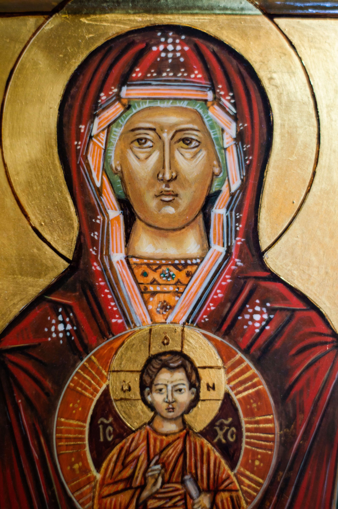
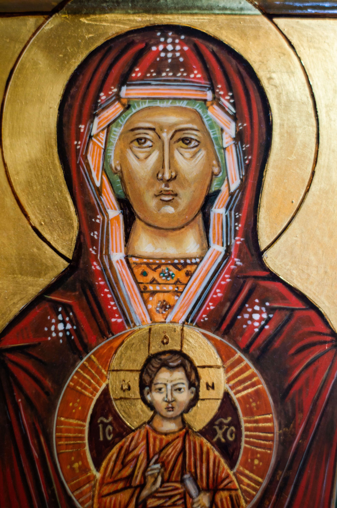
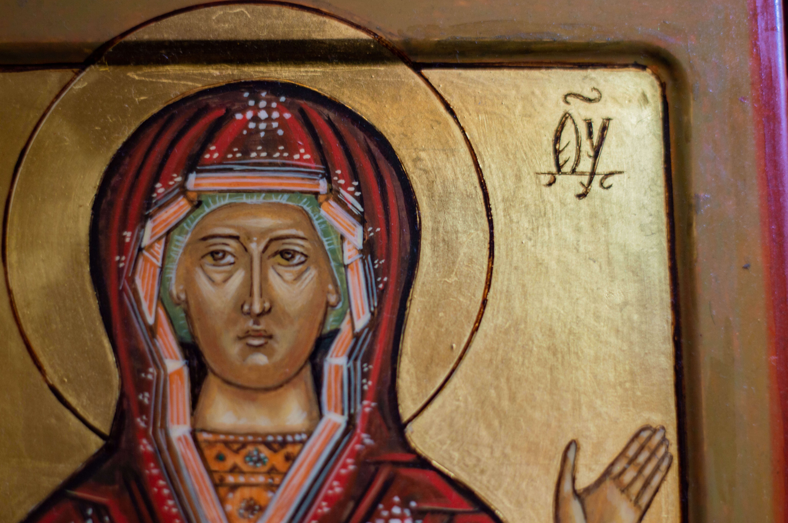
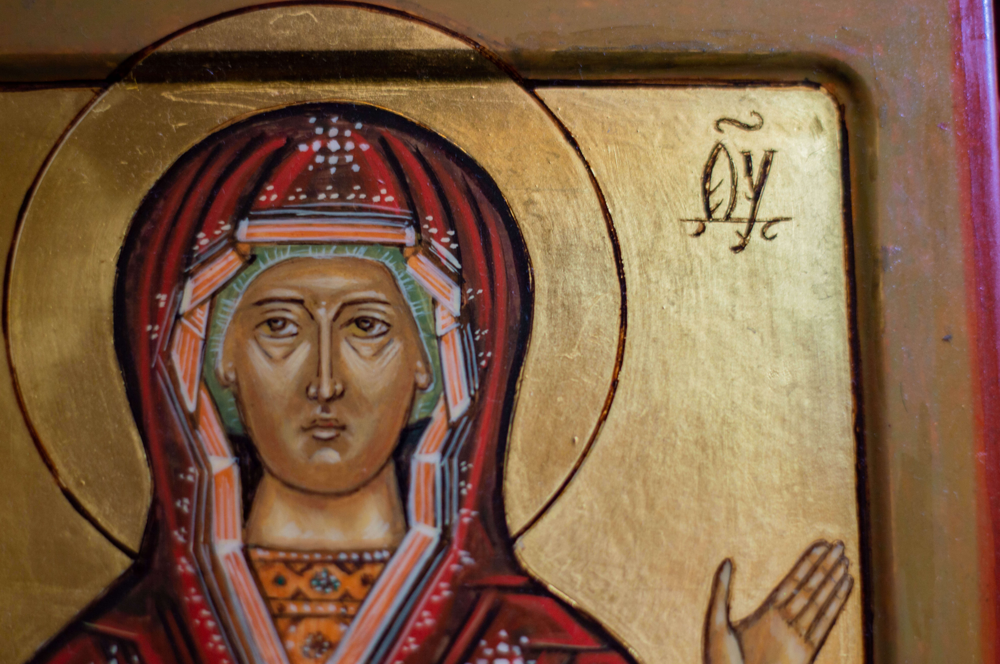

Ikona Matki Bożej „Znak”
Półpostaciowe przedstawienie Matki Bożej z rękoma podniesionymi w geście modlitwy orędowniczej. W medalionie, delikatnie zarysowanym cienką złotą linią na wysokości jej piersi, umieszczono wizerunek Chrystusa Emmanuela ze zwojem w dłoni.
 

 
